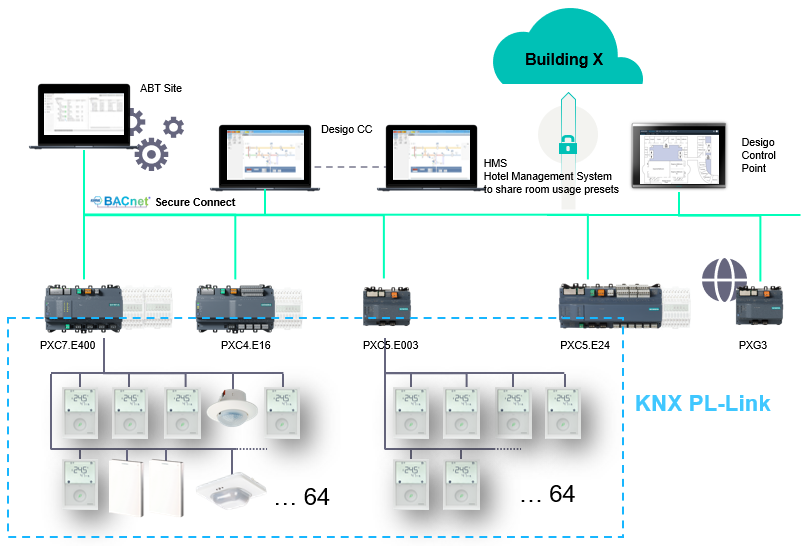
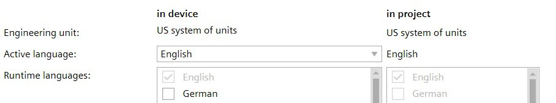
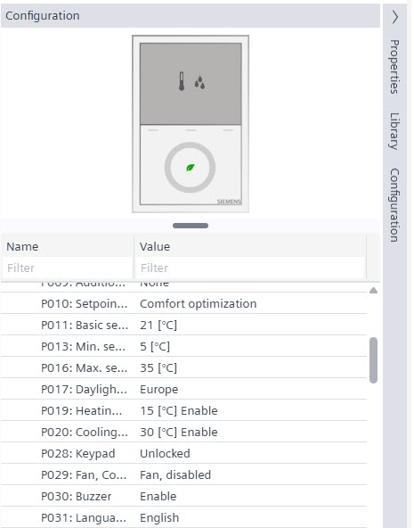
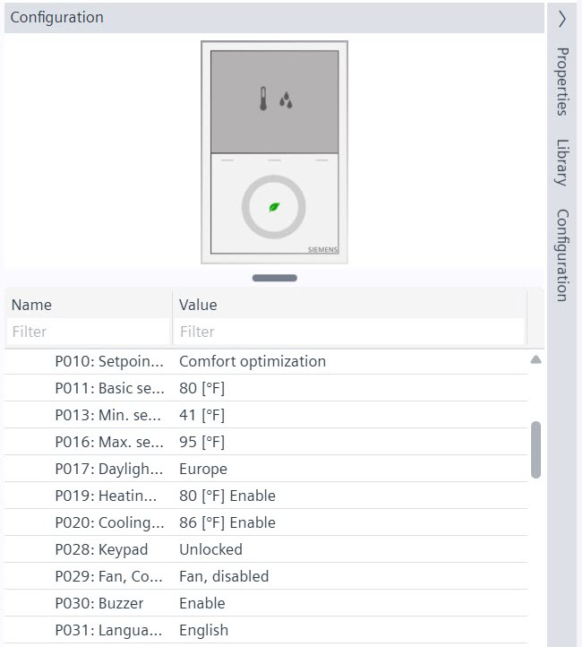

RDG2 device integration
With its pre-installed applications and diverse functions, the RDG2..KN thermostat offers a wide range of special features for hotels, office buildings, educational buildings and public buildings and can be integrated in the Desigo system.

RDG2 Basis documentation
Additional RDG2 configuration information can be found at:
- English: A6V11545892
- German: A6V11545892
- French: A6V11545892
Integrate existing RDG2 installation into PXC4/5/7
With an existing installed base of RDG2 devices, it must be taken into consideration that the RDG2 devices must be replaced or that a firmware update must be carried out. It is not possible to update the firmware via Desigo PXC4/5/7.
Compatibility list for QMX3, QMX6 and RDG2 devices
The compatibility list shows how the manager and subordinate devices are compatible with each other.
Collection, grouping and aggregation functions for KNX PL-Link devices
Engineering unit used in the RDG2 devices
The engineering unit used for the RDG2 devices depends on the localization settings (Celsius or Fahrenheit).

Celsius | Fahrenheit |
|---|---|
 |  |
Checking the runtime version with Web interface
Checking the RDG2 runtime version compatibility